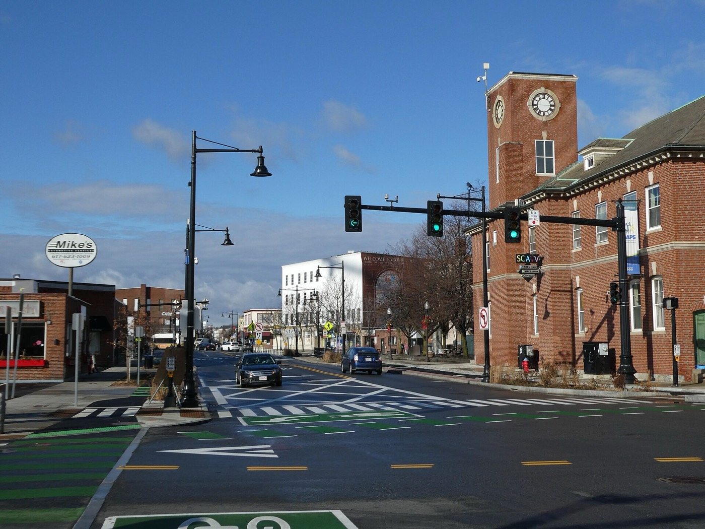

Union Square from Prospect Street. Photo: Pi.1415926535, CC BY-SA 4.0
This Saturday, 10:00 AM
Ride from Union Square to Butternut Bakehouse
Boston Cafe Bikers ride to a cafe or bakery ten times this month. Nobody gets left behind.
See the ride